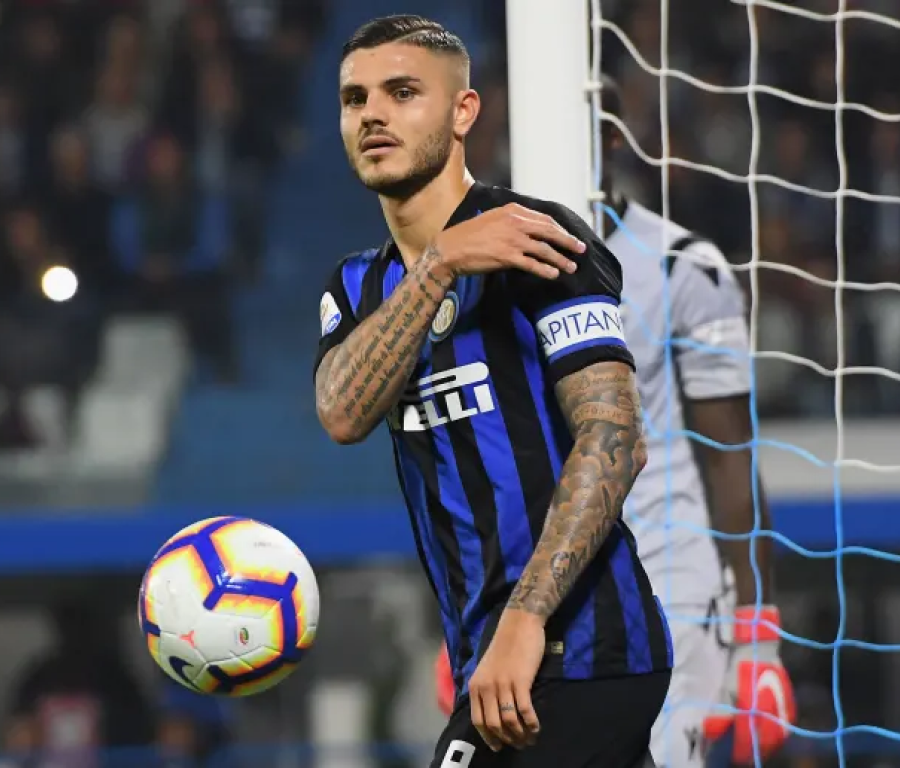
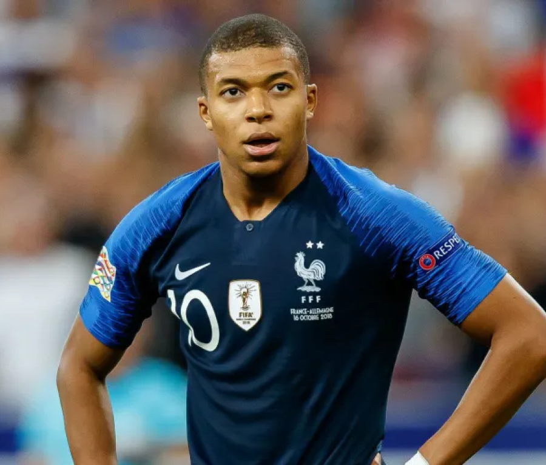
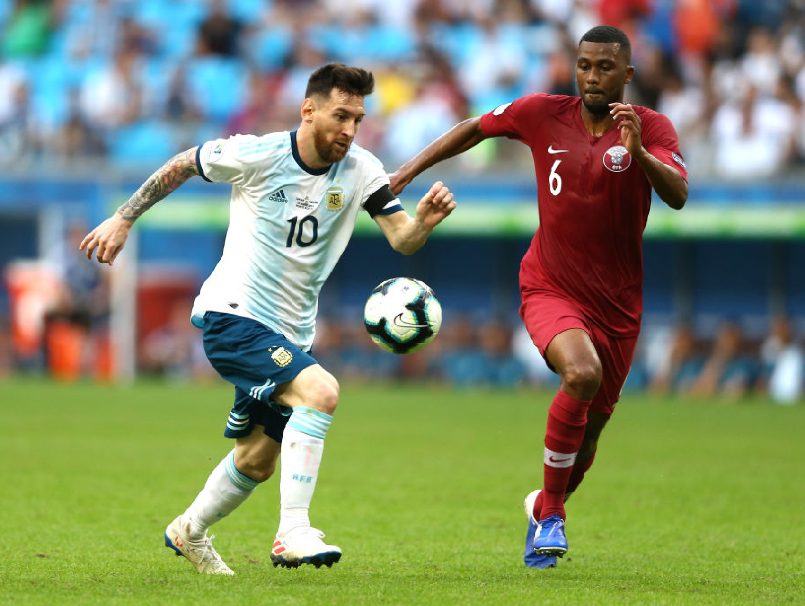

conmebol
copa america
2021


naymer jr
Neymar da Silva Santos Júnior (born 5 February 1992), known as Neymar, is a Brazilian ... The previous year, his family had sold a 40% stake in Neymar's sporting rights to the DIS Esporte group ... Neither Neymar nor the clubs released details on the transfer fee or personal terms, save to say he signed a five-year deal.

lionel messi
Lionel Andrés Messi (Spanish pronunciation: [ljoˈnel anˈdɾes ˈmesi] ( About this sound ... On 21 April, Messi scored Barcelona's second goal – his 40th of the season – in a 5–0 win over ... On 15 October 2017, his wife announced they were expecting their third child in an Instagram post, with the words "Family of 5".

Cristiano Ronaldo
Cristiano Ronaldo dos Santos Aveiro GOIH ComM (Portuguese pronunciation: [kɾiʃˈtjɐnu ʁɔˈnaɫdu]; born 5 February 1985) is a Portuguese professional footballer who plays as a forward for Serie A club Juventus and captains the Portugal national team. Often considered the best player in the world and widely regarded as one of the greatest players of all time

paulo dybala
Paulo Exequiel Dybala (born 15 November 1993) is an Argentine professional footballer who plays as a forward for Serie A club Juventus and the Argentina national team. Commonly referred to as "La Joya" ("The Jewel"),[4] or "U Picciriddu" ("The Kid"; mostly by Palermitans),[5] Dybala began his club career in 2011 with Instituto de Córdoba.

mesut ozil
Mesut Özil is a German professional footballer who plays as an attacking midfielder for Süper Lig club Fenerbahçe. Nicknamed "The Assist King", Özil is known for his technical skills, creativity, agility, and finesse. He has also played as a wide midfielder in his career

mauro Icardi
Mauro Emanuel Icardi is an Argentine professional footballer who plays as a striker for Ligue 1 club Paris Saint-Germain and the Argentina national team.

di maria
Ángel Fabián Di María is an Argentine professional footballer who plays for Ligue 1 club Paris Saint-Germain and the Argentina national team. He can play as either a winger or attacking midfielder.

Kylian Mbappé
Kylian Mbappé Lottin is a French professional footballer who plays as a forward for Ligue 1 club Paris Saint-Germain and the France national team. Mbappé began his senior career with Ligue 1 club Monaco, making his professional debut in 2015, aged 16.

Mohamed Salah
Mohamed Salah Hamed Mahrous Ghaly is an Egyptian professional footballer who plays as a forward for Premier League club Liverpool and captains the Egypt national team. Considered one of the best players in the world, he is known for his finishing, dribbling, and speed.

harry Kane
Harry Edward Kane MBE is an English professional footballer who plays as a striker for Premier League club Tottenham Hotspur and captains the England national team. Regarded as one of the best strikers in the world, Kane is known for his prolific goalscoring record and ability to link play.

Kevin di Bruyne
Kevin De Bruyne is a Belgian professional footballer who plays as a midfielder for Premier League club Manchester City, where he is vice-captain, and the Belgium national team.

Philippe Coutinho
Philippe Coutinho Correia is a Brazilian professional footballer who plays as an attacking midfielder or winger for Spanish club Barcelona and the Brazil national team. He is known for his combination of vision, passing, dribbling and ability to conjure curving long-range strikes.
all highlights
copa america 2021
The 2021 Copa América was the 47th edition of the Copa América, the international men's football championship organised by South America's football ruling body CONMEBOL. The tournament took place in Brazil from 13 June to 10 July 2021.
